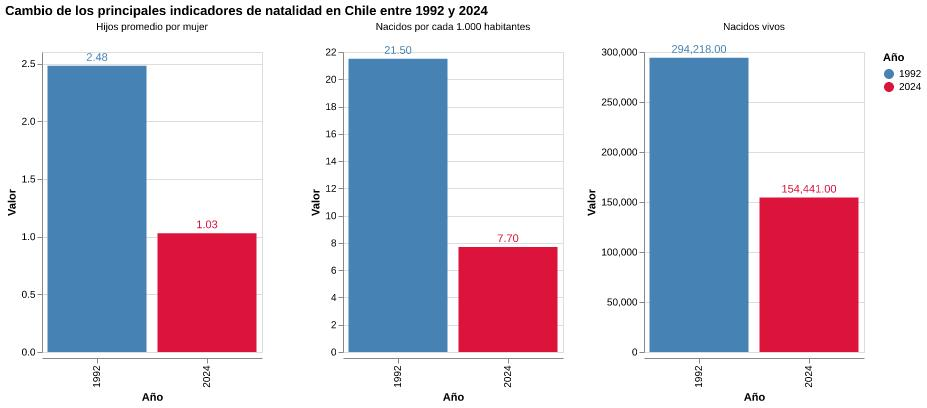

El cambio demográfico que atraviesa Chile entre 1992 y 2024.
Durante las últimas tres décadas, Chile cambio silenciosamente en una de sus dimensiones más profundad: la forma en que se reproduce su población. La caída de la natalidad no aparece solo como una cifra aislada, sino como una tendencia que se mantiene en el tiempo y que permite mirar transformaciones sociales más amplias.
En 1992, el país registraba un nivel de nacimientos bastante más alto que el actual. Para 2024, la cantidad de nacidos vivos había disminuido de manera importante. Esta baja muestra que el fenómeno no responde únicamente a variaciones puntuales de un año a otro, sino a un proceso sostenido que ha ido modificado la estructura demográfica chilena.
La tasa bruta de natalidad confirma esta tendencia desde otra perspectiva, al mostrar los nacimientos en relación con la población. Al comparar los indicadores de 1992 y 2024, la caída se vuelve más clara: los principales datos asociados a la natalidad apuntan en la misma dirección.
Hay menos nacidos vivos, menor fecundidad y tasa de natalidad por cada mil habitantes.Esta visualización permite entender la baja de natalidad como algo más complejo que una simple dimensión numérica.

El gráfico compara tres indicadores centrales: hijos promedio por mujer, nacidos por cada mil habitantes y nacidos vivos. En los tres casos se observa una dimensión importante entre 1992 y 2024.
Los datos muestran una transformación sostenida que puede relacionarse con cambios en los proyectos de vida, el acceso a educación, el costo de vida y nuevas formas de pensar la maternidad y la familia.
Por eso, esta mirada nacional funciona como punto de partida para el resto del proyecto. Antes de analizar diferencias territoriales, edad de la madre o presencia de madres extranjeras, es necesario observar la tendencia general: Chile está teniendo menos nacimientos y también menos hijos por mujer.
Para conocer más sobre estadísticas vitales y datos demográficos, se puede revisar el sitio del Instituto Nacional de Estadísticas.